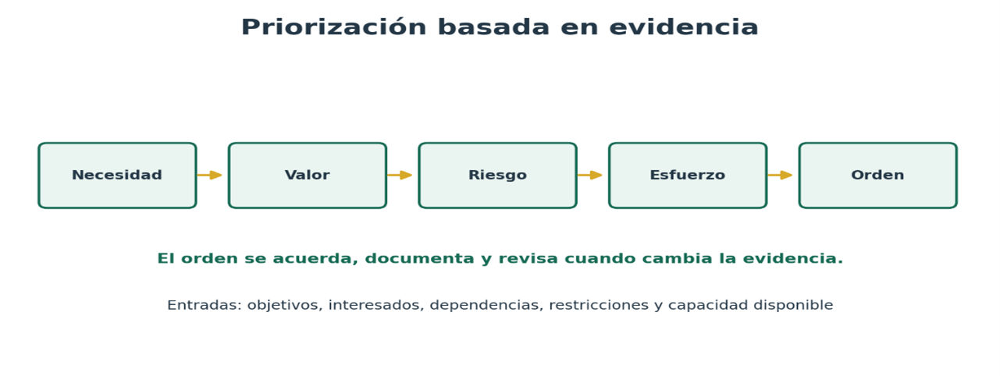
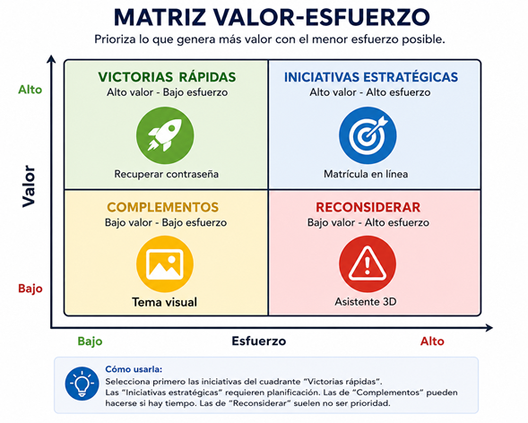
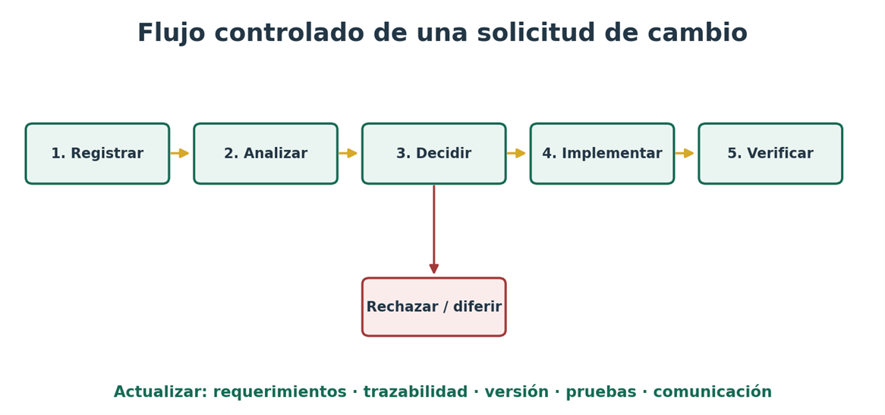
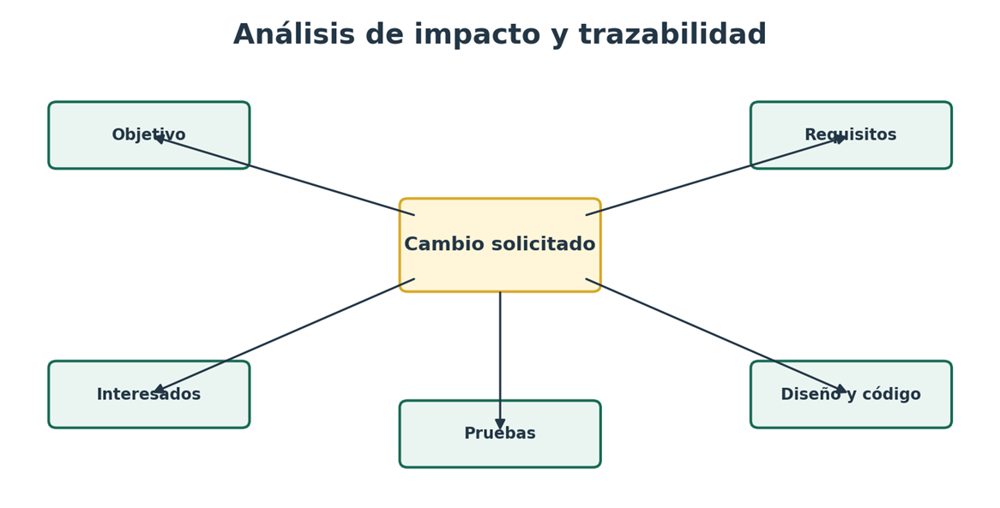

En un proyecto real, las necesidades siempre superan el tiempo, el presupuesto y la capacidad del equipo 💡. Además, la información que obtienes durante el levantamiento cambia constantemente: aparecen nuevas normas, se aclaran procesos, se descubren dependencias o los usuarios reformulan sus expectativas.
Por eso, el análisis de requerimientos no termina al redactar una especificación. Debes sostener decisiones sobre qué construir primero y cómo incorporar cambios sin perder control 🔄.
La priorización transforma una lista de solicitudes en un orden negociado y explicable. La gestión de cambios protege la integridad de la especificación mediante una secuencia mínima: registrar, analizar, decidir, implementar, verificar y comunicar 📋.
✨ Nuestro caso transversal será un sistema institucional de matrícula. La oficina académica necesita habilitar matrícula en línea, consulta de horarios, alertas de conflicto, pagos y reportes, pero dispone de capacidad limitada para la primera versión y recibe nuevas solicitudes durante el desarrollo 🎓.
Objetivos de aprendizaje 🎯
🔍Analizar requerimientos con criterios de valor, urgencia, riesgo, dependencia, esfuerzo y cumplimiento para establecer un orden justificable.
⚖️Aplicar técnicas de priorización MoSCoW, valor esfuerzo, votación ponderada y WSJF de acuerdo con el contexto y la evidencia disponible.
🔄Gestionar solicitudes de cambio mediante registro, análisis de impacto, decisión, trazabilidad, actualización de versiones, comunicación y verificación.
Contenido interactivo 📚
⭐
Tu progreso en este tema
Completa los retos para ganar puntos
0
puntos
Priorizar es establecer un orden relativo para orientar decisiones de análisis, entrega y validación. No es una clasificación permanente: el orden debe revisarse cuando cambian los objetivos, el riesgo, las dependencias o la capacidad 🔄.
La decisión debe ser transparente y contar con un responsable. En enfoques ágiles, el responsable del producto ordena el backlog para maximizar valor, mientras los interesados aportan evidencia y restricciones 🤝.
📊 Criterios de priorización
Criterio
Pregunta orientadora
Evidencia posible
Valor
¿Qué resultado mejora para usuarios u organización?
Objetivos, indicadores, ahorro, satisfacción
Urgencia
¿Qué ocurre si se aplaza?
Fechas legales, calendario académico, ventana de oportunidad
Riesgo
¿Qué amenaza reduce o qué incertidumbre resuelve?
Matriz de riesgos, incidentes, supuestos
Dependencia
¿Qué trabajo habilita o bloquea?
Mapa de procesos, arquitectura, interfaces
Esfuerzo
¿Qué capacidad, costo y complejidad requiere?
Estimación del equipo, prototipo, datos históricos
Cumplimiento
¿Es obligatorio por norma, contrato o seguridad?
Norma, política, requisito contractual
⚠️ Precaución
La persona con mayor autoridad no debe sustituir la evidencia. Una prioridad defendible combina criterios explícitos, fuentes verificables y acuerdos documentados.

Figura 1. Criterios de priorización
🎮 Reto rápido: Identifica el criterio
Lee la situación y selecciona el criterio de priorización más adecuado:
Antes de iniciar el proceso de priorización, es fundamental preparar adecuadamente el conjunto de requerimientos. Una priorización efectiva no depende únicamente de asignar una puntuación, sino de garantizar que cada requerimiento esté correctamente definido, represente una necesidad real del usuario y pueda evaluarse de manera objetiva 🎯.
Esta preparación permite evitar decisiones basadas en información incompleta o ambigua, facilita la comparación entre requerimientos y asegura que los recursos disponibles se orienten hacia el desarrollo de las funcionalidades que generan mayor valor para la organización y sus usuarios 💡.
✅ Checklist de preparación
Marca cada ítem para verificar que tus requerimientos están listos para priorizar:
🎯 MoSCoW
MoSCoW clasifica los requerimientos como Must have, Should have, Could have y Won't have this time. "Must" debe reservarse para lo indispensable: sin ello la entrega incumple su propósito, una obligación o una condición de operación. "Won't" no significa rechazo definitivo, sino exclusión consciente del alcance actual 🚫.
Categorías MoSCoW
Categoría
Interpretación
Ejemplo en matrícula
Must
Esencial para que la versión sea viable o conforme
Validar que el estudiante esté activo
Should
Importante; existe una alternativa temporal aceptable
Alertar conflicto de horario antes de confirmar
Could
Aporta valor, pero su ausencia tiene impacto menor
Personalizar el color del horario
Won't ahora
No se incluirá en esta versión; queda registrado
Asistente conversacional para recomendar asignaturas
🎮 Misión: Clasifica con MoSCoW
Arrastra cada requerimiento a la categoría correcta:
📊 Matriz valor - esfuerzo
La matriz ubica cada elemento según el valor esperado y el esfuerzo estimado. Las victorias rápidas combinan alto valor y bajo esfuerzo; las iniciativas estratégicas tienen alto valor y esfuerzo; los complementos aportan poco valor con bajo esfuerzo; y los elementos de bajo valor y alto esfuerzo deben reconsiderarse 🎯.
La matriz facilita conversación, pero no reemplaza el análisis de cumplimiento, dependencias ni riesgo.

Figura 2. Ejemplo de matriz valor - esfuerzo
🎮 Simulador: Matriz valor - esfuerzo
Selecciona el valor y esfuerzo de cada requerimiento para ver su posición en la matriz:
🗳️ Votación ponderada
Los interesados distribuyen una cantidad limitada de puntos entre alternativas. Puede ponderarse la participación según conocimiento o responsabilidad, siempre que la regla sea conocida. El resultado visibiliza preferencias y desacuerdos; no debe interpretarse automáticamente como decisión final cuando existen obligaciones o riesgos críticos 🤝.
🎮 Simulador: Votación ponderada
Distribuye tus 10 puntos entre los requerimientos según tu preferencia:
📈 Puntuación ponderada y WSJF
Una matriz ponderada asigna pesos a criterios y calcula una puntuación comparable. Por ejemplo: valor 35%, urgencia 25%, riesgo 20%, dependencia 10% y cumplimiento 10% 🧮.
WSJF, usado en contextos de flujo, divide el costo de demora entre el tamaño o duración del trabajo: cuanto mayor sea el cociente, mayor es la prioridad relativa. Las escalas deben ser consistentes y las estimaciones revisables ⏱️.
Ejemplo de matriz ponderada
Req.
Valor 35%
Urg. 25%
Riesgo 20%
Dep. 10%
Cumpl. 10%
Total / 5
RF-01 Matrícula
5
5
4
5
5
4,80
RF-02 Horario
4
4
3
3
2
3,50
RF-03 Tema visual
2
1
1
1
1
1,35
Cálculo: Total = Σ (calificación de 1 a 5 × peso). La cifra ayuda a comparar; la decisión debe conservar la explicación cualitativa y las restricciones que no caben en la fórmula.

Figura 3. Ejemplo de cálculo WSJF
🎮 Calculadora: Tu propia matriz ponderada
Asigna calificaciones (1-5) a cada criterio para calcular la prioridad:
La sesión de priorización debe reunir a quienes comprenden el valor, el proceso, la viabilidad técnica, la calidad y el riesgo. El analista facilita la conversación, registra supuestos y evita que una solución predeterminada o una preferencia personal oculte la necesidad 🗣️.
El resultado mínimo es un backlog o catálogo ordenado con criterio aplicado, justificación, dependencias, responsable, fecha y versión 📋.
Ejemplo de backlog ordenado
ID
Requerimiento
Orden
Justificación
Dependencia
Versión
RF-01
Confirmar matrícula
1
Esencial para el objetivo de la primera entrega
Autenticación y estado activo
Línea base 1.0
RF-04
Detectar cruces
2
Reduce errores y reproceso académico
Consulta de horario
Línea base 1.0
RF-08
Recomendar asignaturas
6
Alto esfuerzo; valor no validado
Reglas académicas y datos históricos
Backlog futuro
📝 Qué es un cambio de requerimiento
Un cambio puede agregar, modificar, retirar o reordenar un requerimiento, una regla, un atributo de calidad, una interfaz o un criterio de aceptación. Puede originarse en una norma, un defecto de comprensión, una nueva necesidad, retroalimentación de usuarios, restricciones técnicas o cambios del entorno 🔄.
Antes de una línea base, el refinamiento normal puede manejarse con menor formalidad; después de aprobarla, el cambio debe dejar evidencia de su evaluación y decisión 📋.
Conceptos clave
Concepto
Función
Versión
Identifica un estado específico de un artefacto
Línea base
Versión revisada y aprobada que sirve como referencia controlada
Solicitud de cambio
Registro formal de la modificación propuesta, su causa y alcance
Control de cambios
Proceso para analizar, aprobar, rechazar, diferir e implementar cambios
Historial
Evidencia de qué cambió, quién decidió, cuándo y por qué
🔄 Flujo de gestión de cambios
Durante el desarrollo de un sistema de información es común que los usuarios soliciten modificaciones a los requerimientos inicialmente definidos. Por ello, es necesario contar con un flujo de gestión de cambios que permita registrar, analizar, aprobar o rechazar cada solicitud antes de incorporarla al proyecto 📋.
🎮 Simulador: Flujo de gestión de cambios
Sigue los pasos del flujo para gestionar una solicitud de cambio:
Decidir: Aprobar, rechazar, diferir o solicitar información. Registrar autoridad, fecha y justificación
Planificar e implementar: Asignar responsable y versión; actualizar requerimientos y artefactos; desarrollar la modificación autorizada
Verificar y cerrar: Ejecutar pruebas, confirmar criterios, comunicar el resultado y cerrar con evidencia
Gobernanza proporcional: Un cambio menor de redacción no necesita el mismo nivel de aprobación que una modificación de seguridad o alcance. El rigor se ajusta al impacto, sin perder trazabilidad.
🔍 Análisis de impacto
El análisis de impacto determina qué consecuencias produciría el cambio antes de autorizarlo. Debe examinar efectos directos e indirectos. Por ejemplo, permitir matrícula con deuda no solo modifica una regla: puede afectar autorización, integración financiera, auditoría, mensajes, pruebas, indicadores y responsabilidades institucionales 🎯.

Figura 4. Mapa de análisis de impacto y trazabilidad
Dimensiones del análisis de impacto
Dimensión
Preguntas de análisis
Negocio y usuarios
¿Qué objetivo cambia? ¿Quién gana o pierde valor? ¿Se altera el proceso o la responsabilidad?
Alcance y prioridad
¿Qué entra, sale o se reordena? ¿Afecta el objetivo de la versión?
Técnica y datos
¿Qué interfaces, reglas, componentes, migraciones o controles se modifican?
Calidad y riesgo
¿Cambia rendimiento, seguridad, privacidad, accesibilidad o continuidad?
Proyecto y operación
¿Cuál es el esfuerzo, costo, plazo, capacitación, soporte y ventana de despliegue?
Verificación
¿Qué criterios y pruebas deben agregarse, cambiarse o ejecutarse nuevamente?
🎮 Reto: Análisis de impacto
Analiza el cambio propuesto e identifica las dimensiones afectadas:
🔗 Trazabilidad, comunicación y control de versiones
La matriz de trazabilidad permite recorrer la relación desde el objetivo y la fuente hasta el requisito, el diseño, la implementación y la prueba. Cuando se aprueba un cambio, deben actualizarse todos los vínculos afectados; de lo contrario, el proyecto conserva documentos contradictorios 🔗.
La comunicación debe indicar decisión, alcance, versión efectiva, responsables y acciones esperadas, no solo anunciar que "hubo un cambio" 📢.
Ejemplo de trazabilidad de cambios
Cambio
Requisito afectado
Artefactos relacionados
Prueba
Estado
SC-014
RN-07 / RF-01
Historia HU-03, caso CU-04, regla financiera, API de pagos
PA-22, PS-08
Aprobado para v1.1
SC-015
RNF-05
Prototipo, guía de estilo, pruebas de accesibilidad
PA-31
En análisis
⚠️ Errores frecuentes y buenas prácticas
Error
Consecuencia
Buena práctica
Todo es "Must"
No existe orden real ni margen de negociación
Definir prueba de necesidad y capacidad de la versión
Puntuar sin evidencia
La cifra disfraza opiniones como precisión
Registrar fuentes, escalas, supuestos y desacuerdos
Cambiar por chat o verbalmente
Se pierde alcance, responsable e historial
Crear una solicitud identificable y trazable
Analizar solo costo
Se omiten riesgo, calidad, operación y usuarios
Usar una lista multidimensional de impacto
Actualizar solo el requisito
Diseño, pruebas y manuales quedan inconsistentes
Recorrer y actualizar enlaces de trazabilidad
No comunicar la decisión
Los equipos trabajan con versiones distintas
Publicar decisión, versión efectiva y acciones
🎮 Quiz: Identifica la buena práctica
Selecciona la buena práctica para cada error frecuente:
Actividades prácticas ✍️
🏆
Misiones completadas
Completa las actividades para ganar insignias
0
/ 3 misiones
🎯
Misión 1: Priorización de la primera versión
Competencia: analizar y especificar requerimientos tomando decisiones sustentadas
📋 Situación
El sistema de matrícula tiene diez requerimientos y capacidad para desarrollar aproximadamente seis. En equipos, depuren la lista, acuerden criterios y clasifiquen con MoSCoW. Después construyan una matriz valor - esfuerzo y propongan el orden de la primera versión.
📦 Producto esperado
Matriz de priorización con fuentes, dependencias, justificación, orden y lista de elementos diferidos.
🎮 Simulador de priorización
Completa esta actividad interactiva:
🔄
Misión 2: Comité de control de cambios
Competencia: validar y gestionar cambios considerando intereses, restricciones y trazabilidad
📋 Situación
Durante el desarrollo se solicita permitir matrícula provisional a estudiantes con acuerdos de pago. Cada equipo asumirá roles de representante académico, finanzas, seguridad, desarrollo, pruebas y analista. Deben registrar la solicitud, realizar el análisis de impacto y emitir una decisión argumentada.
📦 Producto esperado
Formulario de cambio, mapa de impacto, acta de decisión y plan de actualización.
🎮 Simulador de comité de cambios
Completa esta actividad interactiva asumiendo diferentes roles:
🔍
Misión 3: Auditoría de trazabilidad y versiones
Competencia: mantener requerimientos claros, verificables, trazables y consistentes durante el ciclo de vida
📋 Situación
Tras aprobar tres cambios, el equipo descubre que las historias, los casos de uso, el documento de requisitos y las pruebas muestran versiones diferentes. Audite los artefactos, identifique inconsistencias, reconstruya los vínculos y proponga un mecanismo de control para la siguiente entrega.
📦 Producto esperado
Matriz de trazabilidad corregida, registro de versiones, informe de hallazgos y lista de verificación.
🎮 Simulador de auditoría
Completa esta actividad interactiva identificando inconsistencias:
Evaluación final ✔️
🎯
Pon a prueba tus conocimientos
Responde correctamente todas las preguntas
0
/ 5 puntos
Recursos 📖
Guía PMI Ágil
Guía práctica de metodologías ágiles para gestión de proyectos
International Organization for Standardization, International Electrotechnical Commission, & Institute of Electrical and Electronics Engineers. (2018). ISO/IEC/IEEE 29148:2018. Ingeniería de sistemas y software: Procesos del ciclo de vida e ingeniería de requisitos. https://www.iso.org/standard/72089.html